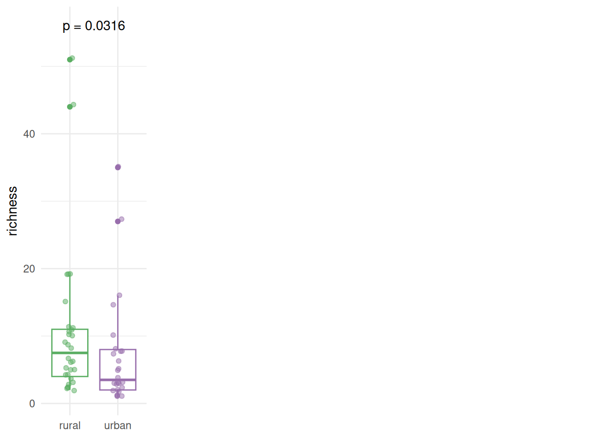
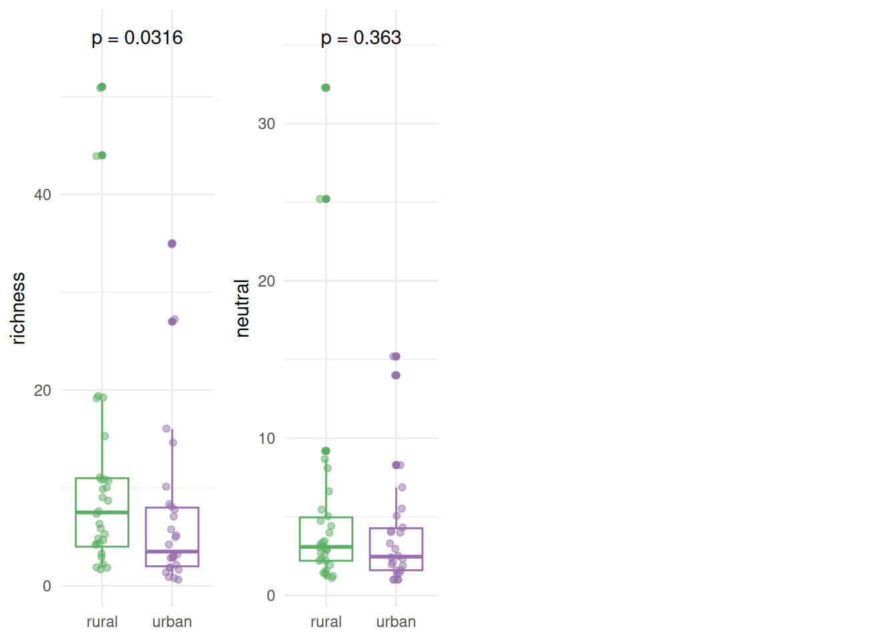
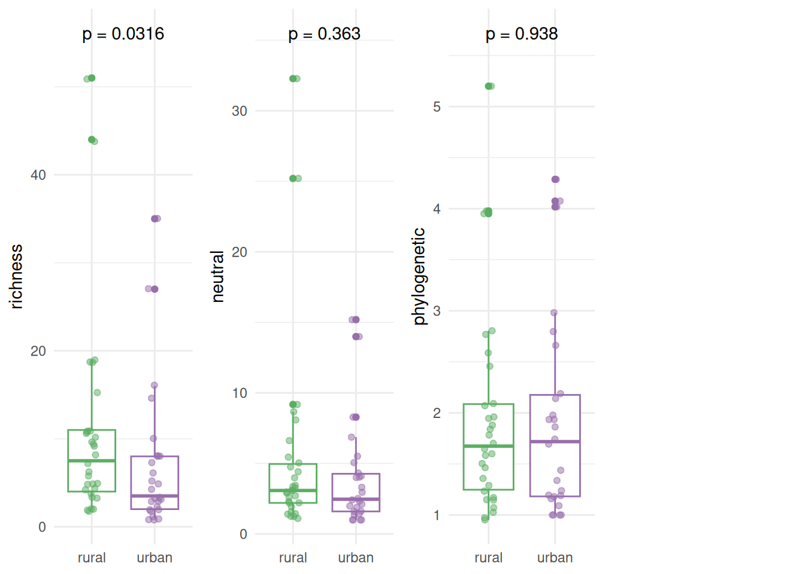
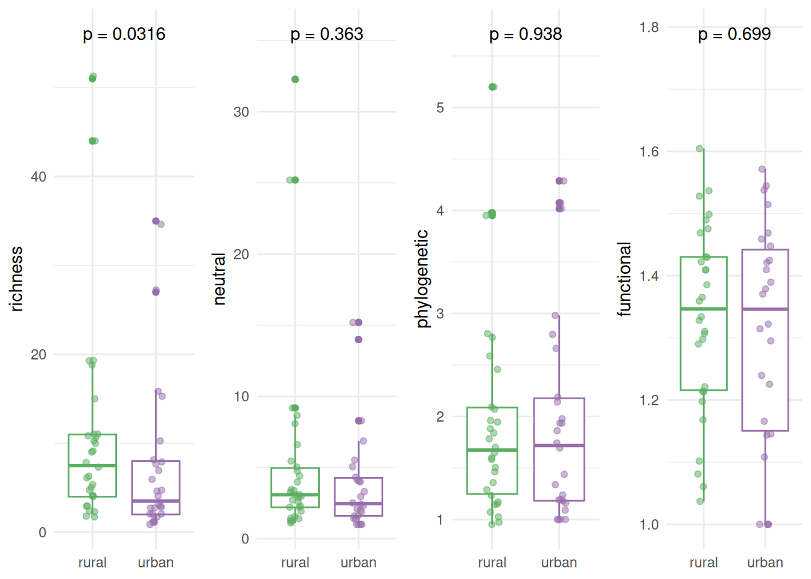
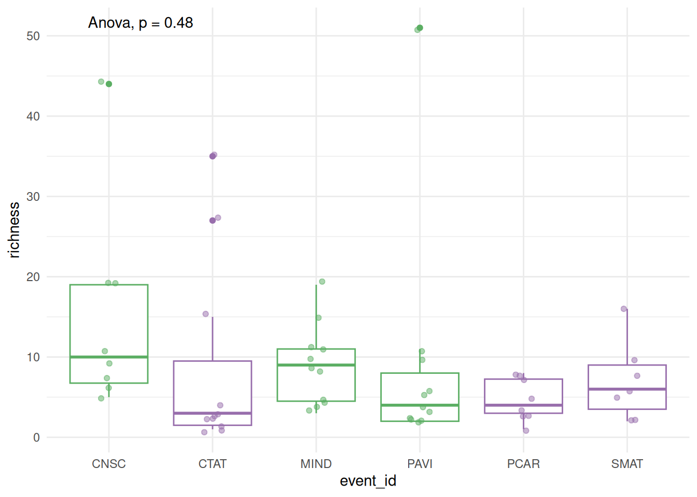
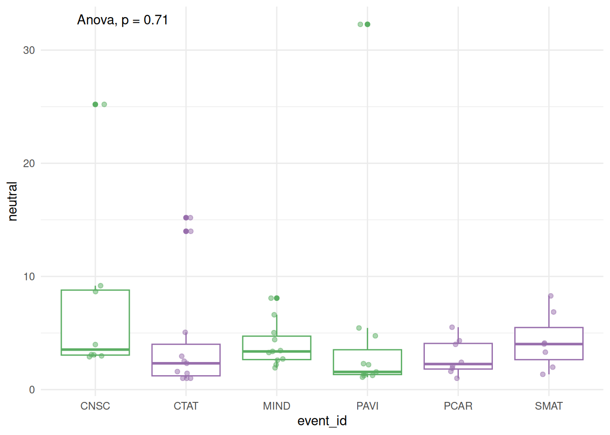
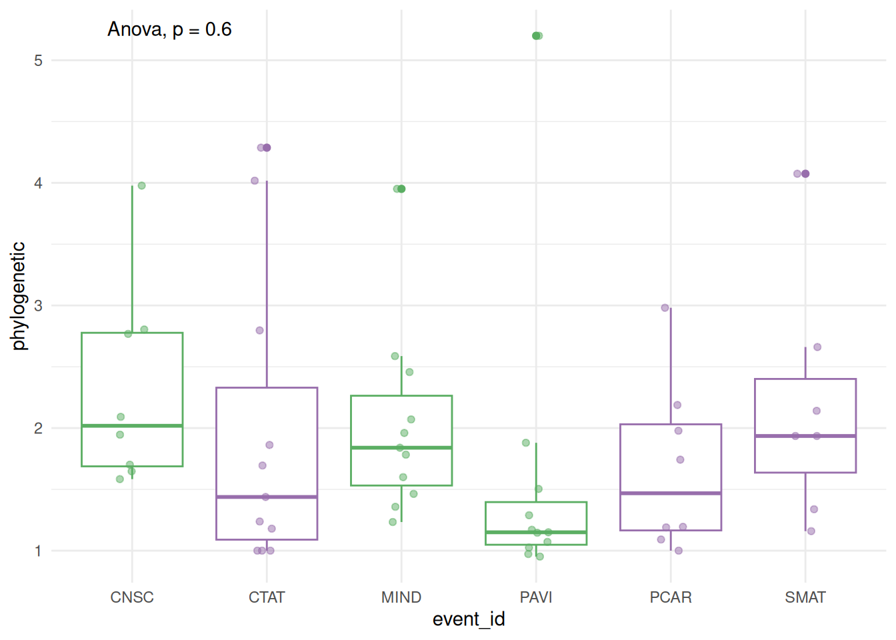
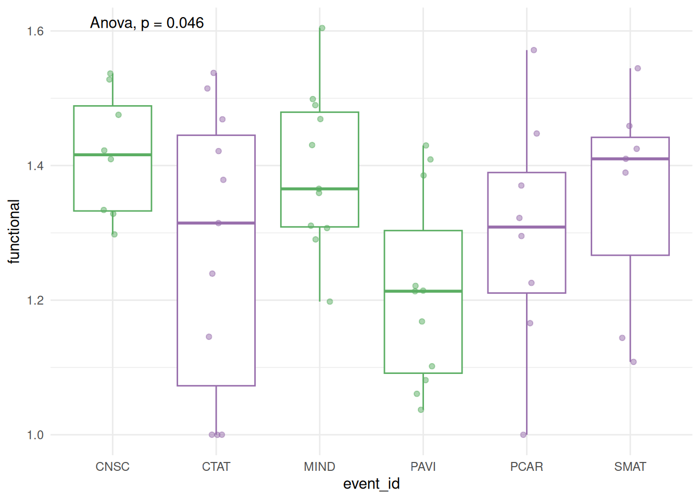
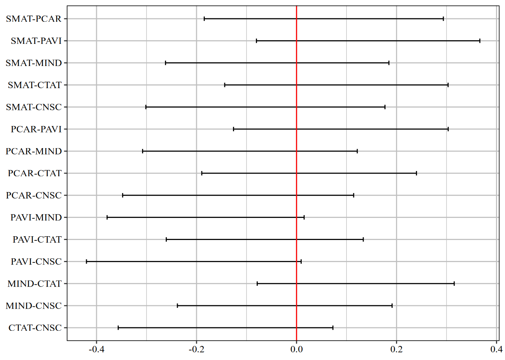
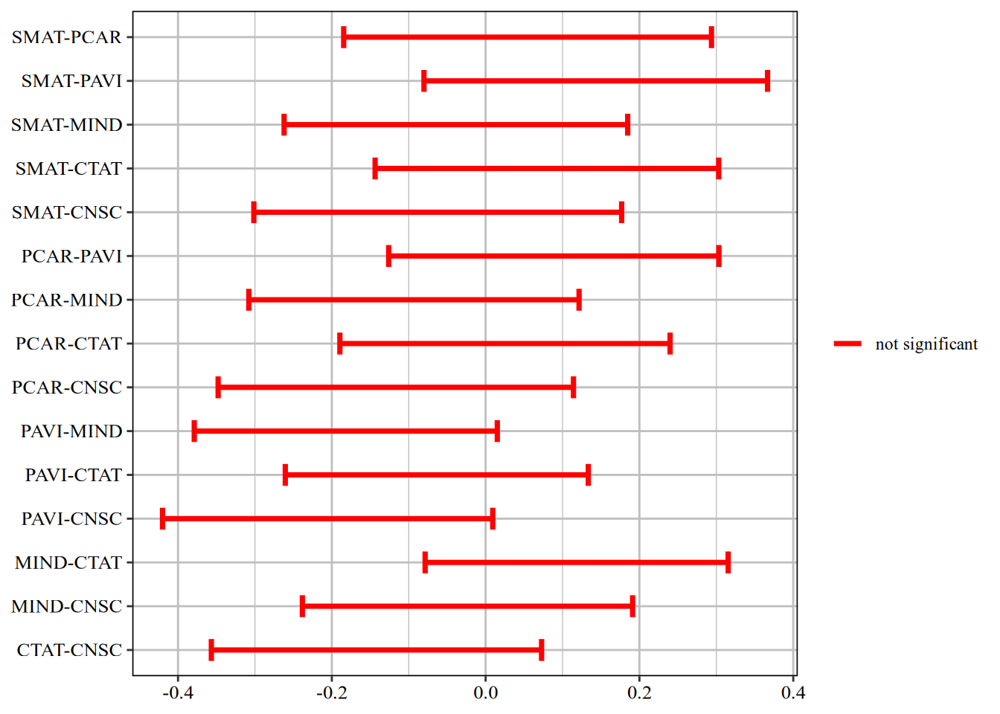

7 Alpha diversity
Load packages
pkgs = readRDS("data/Rpkgs.Rds")
install.packages(setdiff(pkgs, rownames(installed.packages())))
lapply(pkgs, require, character.only = TRUE)[[1]]
[1] TRUE
[[2]]
[1] TRUE
[[3]]
[1] TRUE
[[4]]
[1] TRUE
[[5]]
[1] TRUE
[[6]]
[1] TRUE
[[7]]
[1] TRUE
[[8]]
[1] TRUE
[[9]]
[1] TRUE
[[10]]
[1] TRUE
[[11]]
[1] TRUE
[[12]]
[1] TRUE
[[13]]
[1] TRUE
[[14]]
[1] TRUE
[[15]]
[1] TRUE
[[16]]
[1] TRUE
[[17]]
[1] TRUE
[[18]]
[1] TRUE
[[19]]
[1] TRUE
[[20]]
[1] TRUE
[[21]]
[1] TRUE
[[22]]
[1] TRUE
[[23]]
[1] TRUE
[[24]]
[1] TRUE
[[25]]
[1] TRUE
[[26]]
[1] TRUE
[[27]]
[1] TRUE
[[28]]
[1] TRUE
[[29]]
[1] TRUE
[[30]]
[1] TRUE
[[31]]
[1] TRUE
[[32]]
[1] TRUE
[[33]]
[1] TRUE
[[34]]
[1] TRUE
[[35]]
[1] TRUE
[[36]]
[1] TRUE
[[37]]
[1] TRUE
[[38]]
[1] TRUE
[[39]]
[1] TRUE
[[40]]
[1] TRUE
[[41]]
[1] TRUE
[[42]]
[1] TRUE
[[43]]
[1] TRUE
[[44]]
[1] TRUE
[[45]]
[1] TRUE
[[46]]
[1] TRUE
[[47]]
[1] TRUE
[[48]]
[1] TRUEload("data/data.Rdata")
# keep sample metadatabut rewrite with filters
sample_metadata = sample_metadata37.1 Summary table
# Calculate Hill numbers
richness <- genome_counts_filt %>%
column_to_rownames(var = "genome") %>%
dplyr::select(where(~ !all(. == 0))) %>%
hilldiv(., q = 0) %>%
t() %>%
as.data.frame() %>%
dplyr::rename(richness = 1) %>%
rownames_to_column(var = "sample")
neutral <- genome_counts_filt %>%
column_to_rownames(var = "genome") %>%
dplyr::select(where(~ !all(. == 0))) %>%
hilldiv(., q = 1) %>%
t() %>%
as.data.frame() %>%
dplyr::rename(neutral = 1) %>%
rownames_to_column(var = "sample")
phylogenetic <- genome_counts_filt %>%
column_to_rownames(var = "genome") %>%
dplyr::select(where(~ !all(. == 0))) %>%
hilldiv(., q = 1, tree = genome_tree) %>%
t() %>%
as.data.frame() %>%
dplyr::rename(phylogenetic = 1) %>%
rownames_to_column(var = "sample")
# # Aggregate basal GIFT into elements
genome_counts_filt <- genome_counts_filt[genome_counts_filt$genome %in% rownames(genome_gifts_raw),]
genome_counts_filt <- genome_counts_filt %>%
column_to_rownames(., "genome") %>%
filter(rowSums(. != 0, na.rm = TRUE) > 0) %>%
select_if(~!all(. == 0))%>%
rownames_to_column(., "genome")
genome_gifts <- genome_gifts_raw[rownames(genome_gifts_raw) %in% genome_counts_filt$genome,]
genome_gifts <- genome_gifts[, colSums(genome_gifts != 0) > 0]
dist <- genome_gifts %>%
to.elements(., GIFT_db) %>%
traits2dist(., method = "gower")
functional <- genome_counts_filt %>%
filter(genome %in% rownames(dist)) %>%
column_to_rownames(var = "genome") %>%
dplyr::select(where(~ !all(. == 0))) %>%
hilldiv(., q = 1, dist = dist) %>%
t() %>%
as.data.frame() %>%
dplyr::rename(functional = 1) %>%
rownames_to_column(var = "sample") %>%
mutate(functional = if_else(is.nan(functional), 1, functional))
# Merge all metrics
alpha_div <- richness %>%
full_join(neutral, by = join_by(sample == sample)) %>%
full_join(phylogenetic, by = join_by(sample == sample))%>%
full_join(functional, by = join_by(sample == sample))7.2 Shapiro test
# significant richness diversity
alpha_div %>%
pivot_longer(-sample, names_to = "metric", values_to = "value") %>%
left_join(., sample_metadata, by = join_by(sample == sample)) %>%
filter(metric=="richness") %>%
summarize(shapiro_p_value = shapiro.test(value)$p.value) %>%
pull(shapiro_p_value)[1] 6.219598e-10# significant neutral diversity
alpha_div %>%
pivot_longer(-sample, names_to = "metric", values_to = "value") %>%
left_join(., sample_metadata, by = join_by(sample == sample)) %>%
filter(metric=="neutral") %>%
summarize(shapiro_p_value = shapiro.test(value)$p.value) %>%
pull(shapiro_p_value)[1] 1.553692e-11# significant phylogentic diversity
alpha_div %>%
pivot_longer(-sample, names_to = "metric", values_to = "value") %>%
left_join(., sample_metadata, by = join_by(sample == sample)) %>%
filter(metric=="phylogenetic") %>%
summarize(shapiro_p_value = shapiro.test(value)$p.value) %>%
pull(shapiro_p_value)[1] 1.545502e-06alpha_div %>%
pivot_longer(-sample, names_to = "metric", values_to = "value") %>%
left_join(., sample_metadata, by = join_by(sample == sample)) %>%
filter(metric=="phylogenetic") %>%
summarize(var.test_p_value_phylo = var.test(value ~ habitat)$p.value) # A tibble: 1 × 1
var.test_p_value_phylo
<dbl>
1 0.986merge(
alpha_div,
sample_metadata[,c("sample","habitat","event_id")],
"sample"
) %>%
group_by(habitat) %>%
summarise_at(vars(richness), list(rich.mean = mean))# A tibble: 2 × 2
habitat rich.mean
<chr> <dbl>
1 rural 10.6
2 urban 6.967.3 Plots
g_alpha_div = list()
for ( i in seq_along(colnames(alpha_div))[-1]){
g_alpha_div[[i]] =
ggplot(
# filter by diversity measure
alpha_div %>%
pivot_longer(-sample, names_to = "metric", values_to = "value") %>%
left_join(., sample_metadata, by = join_by(sample == sample)) %>%
# filter(!sol =="ETOH") %>%
filter(metric==colnames(alpha_div)[i]) %>%
na.omit(),
aes(x = habitat, y = value, colour = habitat)) +
geom_boxplot() +
scale_color_manual(name = 'habitat',
values = c("rural" = '#5bae63',"urban" = '#986eac'),
drop = FALSE)+
geom_jitter(width = 0.1, alpha = 0.5) +
labs(x = "habitat",
y = colnames(alpha_div)[i]) +
# add significance from wilcox test
annotate("text", x=1.5, y=max(alpha_div[,colnames(alpha_div)[i]])+(max(alpha_div[,colnames(alpha_div)[i]])*.1),
label=
paste("p =",signif(wilcox.test(value ~ habitat, data =
alpha_div %>%
pivot_longer(-sample, names_to = "metric", values_to = "value") %>%
left_join(., sample_metadata, by = join_by(sample == sample)) %>%
filter(metric==colnames(alpha_div)[i]))$p.value,3))) +
theme_minimal() +
theme(axis.title.x=element_blank())+
guides(colour = FALSE)
#Render composite figure
grid.arrange(grobs = g_alpha_div[-1],
layout_matrix = rbind(c(1,2,3,4))) ->
g
ggsave(paste0('figure/habitat_alpha_div.png'), g, width=20, height=10, units='cm')
}



for ( i in seq_along(colnames(alpha_div))[-1]){
print(
ggplot(
# filter by diversity measure
alpha_div %>%
pivot_longer(-sample, names_to = "metric", values_to = "value") %>%
left_join(., sample_metadata, by = join_by(sample == sample)) %>%
filter(!sol =="ETOH") %>%
filter(metric==colnames(alpha_div)[i]),
aes(x = event_id, y = value, colour = habitat)) +
geom_boxplot() +
geom_jitter(width = 0.1, alpha = 0.5) +
scale_color_manual(name = 'habitat',
values = c("rural" = '#5bae63',"urban" = '#986eac'),
drop = FALSE)+
labs(x = "event_id",
y = colnames(alpha_div)[i]) +
theme_minimal() +
stat_anova_test() +
#facet_wrap(vars(habitat), scales = "free_x") +
guides(colour = FALSE)
)
}



GGTukey.3<-function(Tukey, Style){
GT<-function(Tukey){
A<-require("tidyverse")
if(A==TRUE){
library(tidyverse)
} else {
install.packages("tidyverse")
library(tidyverse)
}
B<-as.data.frame(Tukey[1])
colnames(B)[2:3]<-c("min",
"max")
C<-data.frame(id=row.names(B),
min=B$min,
max=B$max)
D<-C%>%
ggplot(aes(id))+
geom_errorbar(aes(ymin=min,
ymax=max),
width = 0.2)+
geom_hline(yintercept=0,
color="red")+
labs(x=NULL)+
coord_flip()+
theme(text=element_text(family="TimesNewRoman"),
title=element_text(color="black",size=15),
axis.text = element_text(color="black",size=10),
axis.title = element_text(color="black",size=10),
panel.grid=element_line(color="grey75"),
axis.line=element_blank(),
plot.background=element_rect(fill="white",color="white"),
panel.background=element_rect(fill="white"),
panel.border = element_rect(colour = "black", fill = NA,size=0.59),
legend.key= element_rect(color="white",fill="white")
)
return(D)
}
GT2<-function(Tukey){
A<-require("tidyverse")
if(A==TRUE){
library(tidyverse)
} else {
install.packages("tidyverse")
library(tidyverse)
}
B<-as.data.frame(Tukey[1])
colnames(B)[2:4]<-c("min",
"max",
"p")
C<-data.frame(id=row.names(B),
min=B$min,
max=B$max,
idt=ifelse(B$p<0.05,
"significant",
"not significant")
)
D<-C%>%
ggplot(aes(id,color=idt))+
geom_errorbar(aes(ymin=min,
ymax=max),
width = 0.5,
size=1.25)+
labs(x=NULL,
color=NULL)+
scale_color_manual(values=c("red",
"green")
)+
coord_flip()+
theme(text=element_text(family="TimesNewRoman"),
title=element_text(color="black",size=15),
axis.text = element_text(color="black",size=10),
axis.title = element_text(color="black",size=10),
panel.grid=element_line(color="grey75"),
axis.line=element_blank(),
plot.background=element_rect(fill="white",color="white"),
panel.background=element_rect(fill="white"),
panel.border = element_rect(colour = "black", fill = NA,size=0.59),
legend.key= element_rect(color="white",fill="white")
)
return(D)
}
GR<-if(Style==1){
return(GT(Tukey))
} else if(Style==2){
return(GT2(Tukey))
}
return(GR)
}
## Display Tukey results
TUKEY =
TukeyHSD(
aov(value ~ event_id,
data = alpha_div %>%
pivot_longer(-sample, names_to = "metric", values_to = "value") %>%
left_join(., sample_metadata, by = join_by(sample == sample)) %>%
# filter(!sol =="ETOH") %>%
filter(metric==colnames(alpha_div)[i])),
conf.level=.95)
GGTukey.3( TUKEY, Style=1 )

## Distance CorrelateDetermine whether alpha diversity values correlate with distance.
# merge
geo_diversity =
merge(
alpha_div,
sample_metadata[,c("sample","event_id","latitude","longitude")],
by = "sample"
)
geo_diversity$pc1 =
prcomp(geo_diversity[,c("latitude","longitude")])$x[,1]
# test for correlation between diversity and
## Richness
anova(
#lm(richness ~ latitude + longitude, data = geo_diversity))
lm(richness ~ pc1, data = geo_diversity))Analysis of Variance Table
Response: richness
Df Sum Sq Mean Sq F value Pr(>F)
pc1 1 170.2 170.234 1.7096 0.1966
Residuals 54 5377.1 99.576 ## Neutral
anova(
#lm(neutral ~ latitude + longitude, data = geo_diversity))
lm(neutral ~ pc1, data = geo_diversity))Analysis of Variance Table
Response: neutral
Df Sum Sq Mean Sq F value Pr(>F)
pc1 1 21.61 21.614 0.6927 0.4089
Residuals 54 1684.91 31.202 ## Phylogenitic
anova(
#lm(phylogenetic ~ latitude + longitude, data = geo_diversity))
lm(phylogenetic ~ pc1, data = geo_diversity))Analysis of Variance Table
Response: phylogenetic
Df Sum Sq Mean Sq F value Pr(>F)
pc1 1 0.221 0.22064 0.2256 0.6367
Residuals 54 52.812 0.97800 ## Functional
anova(
#lm(functional ~ latitude + longitude, data = geo_diversity))
lm(functional ~ pc1, data = geo_diversity))Analysis of Variance Table
Response: functional
Df Sum Sq Mean Sq F value Pr(>F)
pc1 1 0.07346 0.073462 2.7548 0.1028
Residuals 54 1.44002 0.026667 There appear to be very few correlations between geolocation and any measure of internal diversity. The one exception is a barely significant correlation between functional diversity and latitude (p = 0.45).